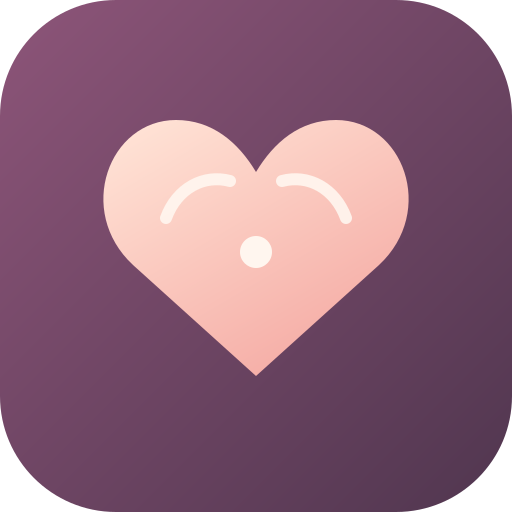
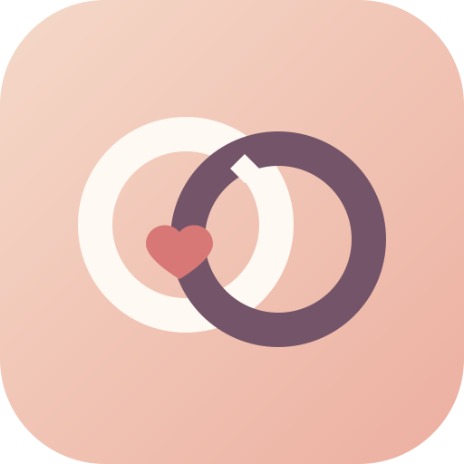
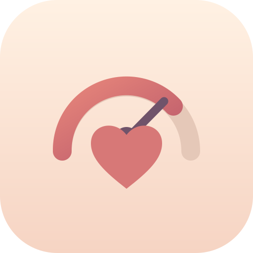

1. Together
A soft heart with two halves finding their place.
Five directions for the app icon. Choose one and I can refine it and prepare the Android/iOS icon files.

A soft heart with two halves finding their place.
A pair of chat bubbles and a heart for shared conversation.

Two interlocking rings with a small heart at the center.

A warm meter dial that turns into a heart.
A calm signal line connecting two people through a heart.